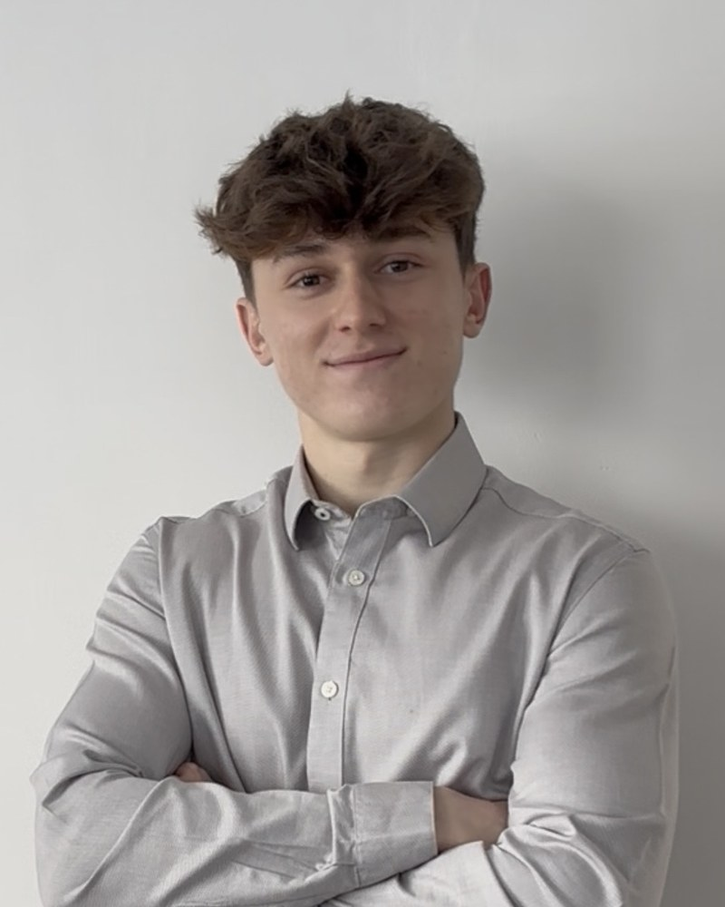
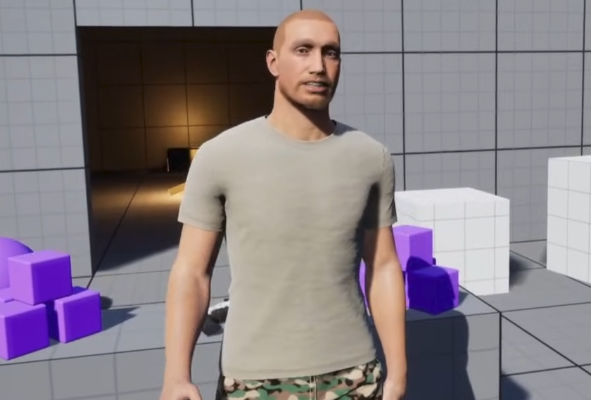
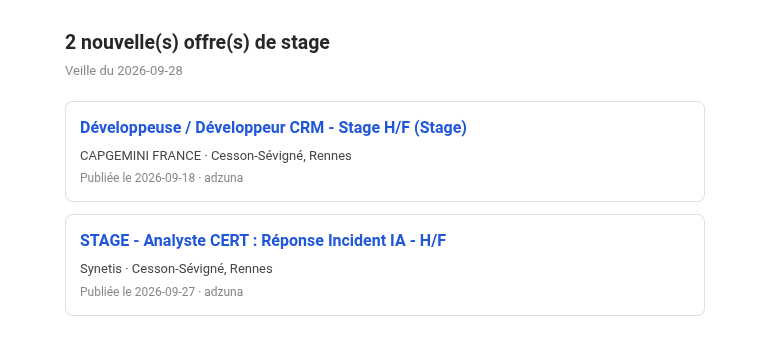
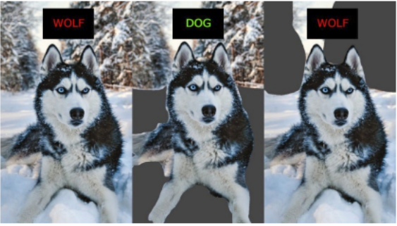

Alexandre
Romanini
Élève ingénieur en informatique à l'INSA Rennes. Ces derniers mois, j'ai fait jouer un agent à Doodle Jump, parler un humain virtuel en VR, et écrit des scripts qui font mes corvées à ma place.

- Je cherche
- Un stage technique de 2 mois, de juillet à septembre 2027
- Février à juin 2027
- Mobilité à l'UFSC, au Brésil
- Basé à
- Rennes, France
Projets
-

Apprentissage par renforcement
Doodle Jump Agent
J'ai branché deux agents sur un Doodle Jump existant sans toucher à ses règles : un planificateur qui simule la physique exacte du jeu, et un agent PPO qui apprend sans la connaître. Le planificateur gagne d'un facteur 9, et j'ai cherché pourquoi.
101 k de score moyen, soit 23 fois un agent aléatoire
Python, Gymnasium, Stable-Baselines3, PyTorch, NumPy
Voir le projet -

Réalité virtuelle, projet d'école en équipe de 5
Agent virtuel piloté par le regard
Un humain virtuel avec qui l'on converse en VR, et dont le regard exprime une personnalité grâce à l'eye-tracking. J'ai intégré le plugin ConvAI pour le lip sync et développé le comportement de regard extraverti.
Unreal Engine 5, Blueprints, MetaHuman, SteamVR
Voir la présentation -

Automatisation, projet perso
Veille automatisée d'offres de stage
Je perdais du temps à rouvrir les mêmes sites, alors un script le fait pour moi. Avant de coder, j'ai lu les robots.txt et les CGU de chaque site, et construit le projet autour d'API officielles.
Récapitulatif hebdomadaire par mail, sans doublons
Python, SQLite, systemd
Voir le projet -

Web app (PWA), projet perso
WeightTracking
Je n'arrivais jamais à me souvenir des charges soulevées à la séance précédente, alors j'ai construit une appli de musculation qui les affiche en grand. Elle compare chaque séance à l'historique et signale les nouveaux records.
876 exercices, fonctionne hors ligne, sans compte
React, TypeScript, Dexie (IndexedDB), Tailwind CSS, Vitest
Essayer l'appli Voir le projet -

Illustration : Ribeiro et al., « Why Should I Trust You? », 2016 IA explicable
C-XAI En cours
Expliquer les décisions d'un réseau de neurones à l'aide de concepts compréhensibles par l'humain.
Python, PyTorch
Développés avec l'IA
J'en avais assez de payer des logiciels Windows pour des fonctions basiques, alors je les ai recodés.
-

PDFManager
Éditeur PDF gratuit et hors ligne, pensé pour remplacer Acrobat Pro : annotations, signatures numériques, OCR, traduction DeepL et assistant IA local.
Python, PySide6, PyMuPDF, llama.cpp
Existe aussi en version Rust, avec un installeur 6× plus léger et un démarrage plus rapide.
Voir le projet Voir la version Rust -

CleanLite
Nettoyeur Windows prudent inspiré de CCleaner, avec une liste blanche stricte des chemins et un mode simulation par défaut.
Python, tkinter, PowerShell
Voir le projet
Parcours
- 2023Bac Maths / NSIOption maths expertes, mention très bien.
- 2023Prépa intégrée ESIRDeux ans de bases scientifiques.
- 2025INSA RennesCycle ingénieur en informatique, option IA.
- 2027UFSC, BrésilMobilité internationale de février à juin.
Outils du quotidien
- Langages
- Python, Java, C, C++
- IA
- PyTorch, Stable-Baselines3, Gymnasium, NumPy
- Réalité virtuelle
- Unreal Engine 5, MetaHuman, Unity, SteamVR
- Outils
- Git, Linux, Bash, n8n